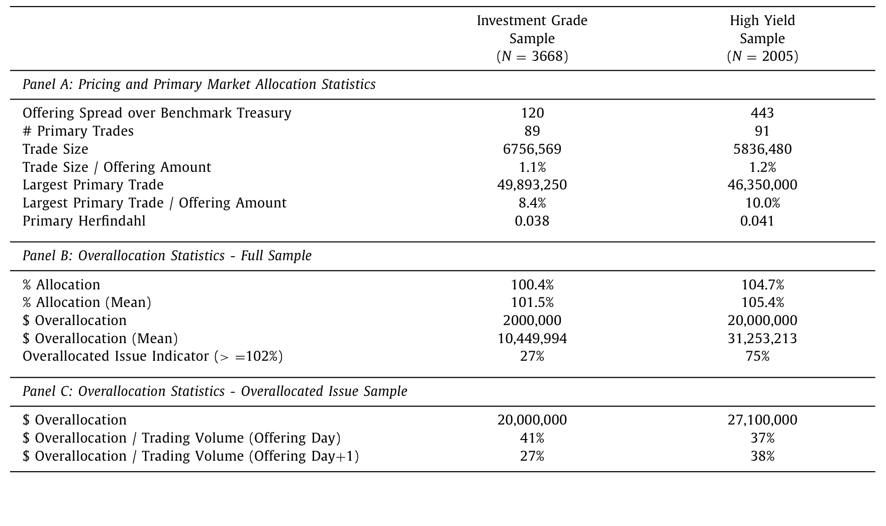
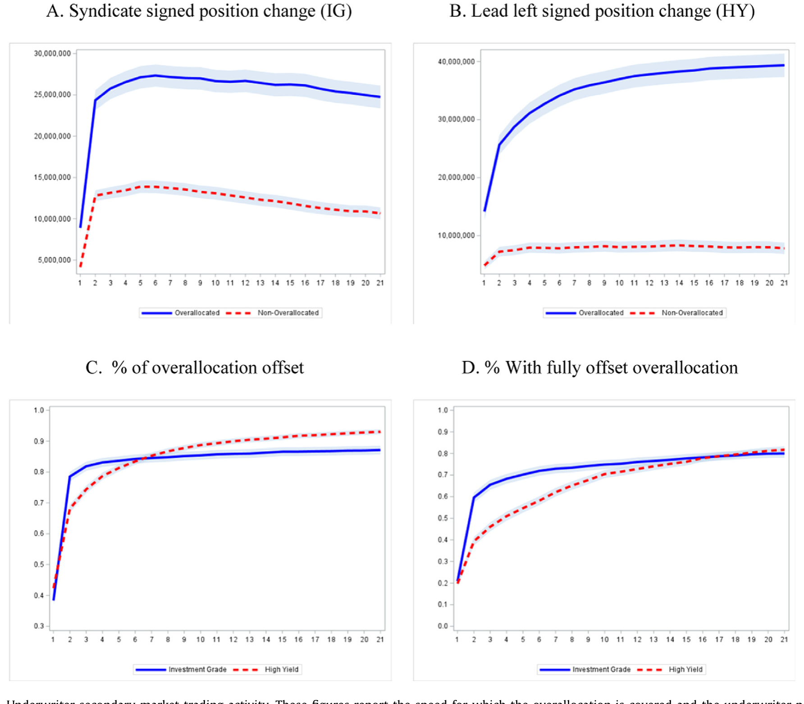
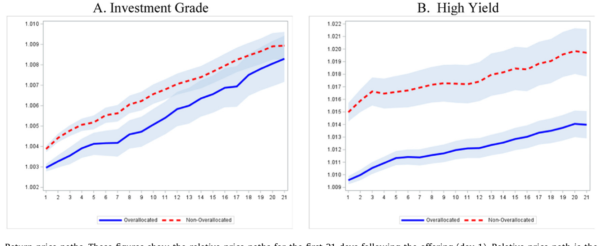
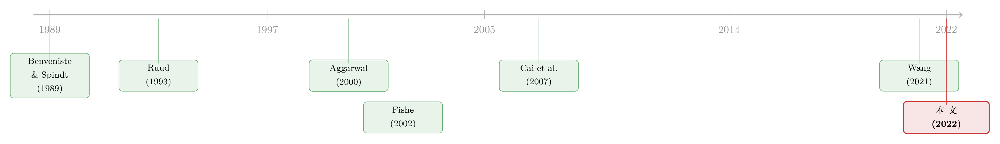

把债券「超额配售」给你：承销商在悄悄做空什么？
本文读的是 Bessembinder, Jacobsen, Maxwell & Venkataraman (2022, JFE)：公司债承销商没有股票市场里的「绿鞋期权」，也没有追踪「翻单」的系统，于是他们用一个更朴素的办法来应对二级市场的需求不确定性——【有选择地超额配售】，把一部分发行卖出超过发行量的份额，让自己在一级市场上变成净空头。这个空头随后要靠在二级市场买回来覆盖，所以承销商只会在「预感到需求疲软」的发行上这么干。于是，超额配售本身，就成了一个可观测的信号：哪只新债的二级市场需求要出问题。
1 一个被忽略的「半边天」
谈到新股发行，金融学的文献已经汗牛充栋：抑价、信息不对称、绿鞋、稳定操作……几乎每一个角落都被翻过。可一旦把镜头转向公司债，画面立刻安静了下来。
这其实有点反常。论文一开篇就甩出一组数字：2021 年，美国公司通过债券融资 $1.96 万亿美元，而股权融资只有 $436 十亿；与此同时，公司债二级市场的全年成交只有新发行量的 2%，而股票二级市场成交却高达新发行量的 136%。换句话说，债券市场里融的钱更多，但「发完之后就很少再交易」——一级市场相对于二级市场，重要得多。
这就带出一个张力：在一个一级市场举足轻重、而二级市场又异常清淡的市场里，承销商怎么把一只刚定好价的新债，平稳地「塞」进投资者的组合里？
首先要承认一个事实：债券承销商的工具箱，比股票同行寒酸得多。
2 承销商手里少了哪几件兵器
在股票发行里，承销团有三件压舱石（Wilhelm, 1999 的归纳）：
- 超额配售 (overallocation)：先卖出超过发行量的份额，形成空头；
- 稳定报价 (stabilizing bids)：挂出标准买单，顶住抛压；
- 罚单 (penalty bids)：谁把份额配给了「翻单客」，就扣谁的佣金。
更关键的是，股票承销商有 绿鞋期权 (Greenshoe option)：当超额配售形成空头、而股价又走强时，他们可以行权、按发行价增发新股来覆盖空头，几乎无痛。还有 DTC 的 IPO 追踪系统，能精确识别出谁在「翻单 (flipping)」——拿到配售后转手就卖。
可到了公司债这边，这些兵器几乎全部失灵。作者和承销商的访谈得到的回答是：稳定报价、罚单基本不用；绿鞋期权也极罕见。为什么连绿鞋都不用？论文给了三条理由，其中最要紧的一条是——债券的信用评级，部分取决于杠杆率、利息保障倍数这类硬指标。行使绿鞋会扩大发行规模、增加债务，从而搅动这些指标。于是债券承销商被剥得只剩一件武器：超额配售。
但这件武器，在债券里和在股票里，性质完全不同。
接着，一个自然的问题是：既然没有绿鞋，超额配售形成的空头，靠什么来覆盖？
答案只有一个——到二级市场上去买回来。而二级市场的价格，平均是高于发行价的（债券和股票一样，平均存在抑价）。也就是说，承销商「高买低卖」，超额配售的短覆盖天然是亏钱的。
于是论文的核心逻辑一下子就立住了：既然短覆盖大概率要亏钱，承销商就【绝不会无差别地】超额配售，而只会在「他们预判二级市场需求疲软、价格涨不上去、甚至需要自己下场托价」的发行上才这么做。
把这层意思倒过来读，就是全文最漂亮的一句话：超额配售，是承销商对一只新债「需求会疲软」的提前下注。它是一个外部观察者也能看到的、关于订单簿质量的领先信号。
3 识别策略：用一个会计恒等式抓「空头」
这篇论文没有花哨的工具变量，也没有断点。它的「识别」更朴素也更扎实：直接把超额配售量测出来。
怎么测？作者拿到了 FINRA 的 TRACE 数据中一般研究者拿不到的部分：每只债券的 一级配售交易 (primary placement transactions)，外加打了掩码的交易商身份、未截断的二级市场成交规模，以及把 SDC 里的承销团成员对应到 34 家主要交易商的链接信息。
有了这些，超额配售量就是一个会计恒等式：
$$ \text{Overallocation} = \sum_i (\text{primary allocation}_i) - \text{Issue Amount} $$
把所有一级配售量加总，减去发行规模。如果承销团卖出去的份额超过了发行量，差额就是它的净空头。作者特别关注那些超额配售【超过发行量 2%】（样本中位数）的发行。
数据上：样本是 2010 年 3 月（FINRA 开始采集一级配售信息）到 2018 年 3 月的 5,673 只公司债发行，债券特征来自 Mergent FISD，承销团结构与费率来自 SDC，一二级交易来自 TRACE。观测单位是单只发行。
第一个事实就很说明问题：在以 2% 为门槛时，超过四分之三的高收益 (high yield, HY) 发行被超额配售，而投资级 (investment grade, IG) 发行里【不到三分之一】被超额配售。这完全符合直觉——高收益债的长期投资者基础更窄，需求更不确定，正是承销商最需要「先做空、再托价」的地方。

Table 2: provides descriptive statistics on primary mar-
4 主要结果：四个环环相扣的事实
论文的实证可以串成一条因果链，我们一个一个看。
第一，超额配售挑的是「需求不确定」的时点。 作者发现，当同期相关发行的【发行日定价离散度】更高、VIX 水平更高、VIX 变化更大、以及近期债券指数收益更低时，发行更可能被超额配售。这些都是「二级市场需求不确定」的代理变量。承销商是在【先发制人】地对冲不确定性。
第二，超额配售的金额是「经济上实质性」的。 在 2% 门槛之上，超额配售的中位数是投资级 $20.0 百万、高收益 $27.1 百万。更直观的一个比较：超额配售的美元规模，平均占到发行后【头两个交易日】二级市场成交量的【三分之一以上】——这意味着，短覆盖交易大到足以撼动二级市场价格。
第三，空头被「迅速」覆盖。 承销团在超额配售发行的售后市场是激进的净买家：头两个交易日的净买入均值超过 $25 百万。而且这个空头消失得极快——平均而言，至少 70% 的空头在【两天内】就被覆盖掉。价格稳定操作几乎是从交易一开始就启动，并且短命。

Figure 2: Underwriter secondary market trading activity. These figures report the speed for which the overallocation is covered and the underwriter po
第四，也是最反直觉的一步：尽管承销团在拼命买，超额配售的债券反而涨得更少。 按常理，承销商大手笔净买入，价格该被托得更高才对。但数据相反——超额配售的发行【抑价更小】（即售后涨幅更小）。
这个「反转」恰恰是全文逻辑的闭环。承销商不是因为看好才买，而是因为【预判到疲软】才不得不超额配售、再下场托价；正因为这些发行本身需求弱，即便有大额买盘撑着，价格也涨不动。买盘不是看涨的信号，而是「需要被支撑」的症状。

Figure 4: Return price paths. These figures show the relative price paths for the first 21 days following the offering (day 1). Relative price path is
这里有一个容易混淆的点：超额配售发行「涨得少」，并不等于承销商的托价【无效】。恰恰相反，作者的解读是，如果没有这些买盘，这些弱发行的价格可能会被翻单抛压压到发行价【以下】。托价把价格稳在了发行价附近，而不是推到高位。
那么，谁在卖、谁在买？最后一块拼图落在售后一个月的订单流上。作者发现：机构是超额配售债券的净卖家，他们实际上把债券「供给」给了承销团去覆盖空头；而与 Green et al. (2007) 和 Goldstein et al. (2021) 一致，散户是二级市场的净买家，对超额配售的发行尤其如此。于是二级市场完成了一次实质性的再分配——新债从机构手里，经由承销团，流向了散户和更稳定的长期持有者。
值得强调的是：承销商在这些短覆盖交易上确实是【亏钱】的（因为债券平均抑价，高买低卖），但这点亏损相对于承销佣金而言【微不足道】。这一点很重要——它否定了「超额配售是为了从做空里赚钱」的理论（见下文）。
5 这件事，理论上到底图什么？
公司债承销商的超额配售，并不是这篇论文第一次被讨论的母题，但它能在几个相互竞争的理论之间做裁判，这是它的独到之处。
- Fishe (2002) 的模型说：承销商超额配售【弱】IPO，是为了建立空头，等价格从发行价跌下来时获利。预测是——承销商【赚钱】。
- Zhang (2004) 说：超额配售是一种利用投资者行为偏差的「营销策略」，预测承销商在稳定交易上【打平】。
- Wilhelm (1999) 说：超额配售主要是为了「创造购买力」，让承销团能够在【不建立新多头仓位】的前提下托价。
这篇论文的证据，把天平按向了 Wilhelm。因为数据显示承销商在短覆盖上是【亏钱】的（否定 Fishe 的「获利」与 Zhang 的「打平」），而且超额配售形成的空头，恰好让后续托价买入有了「弹药」——买回来的债，是去填先前卖超的坑，而不是新建一个需要日后再卖掉、再砸价的多头。这正是「创造购买力」的精髓。
可以把这套「为什么是超额配售、而不是别的应对方式」的逻辑，用承销团面对弱需求时的五个选项来组织（论文 2.2 节）：(i) 提高发行收益率，(ii) 缩减发行规模，(iii) 取消发行，(iv) 不超额配售、但承诺必要时下场买，(v) 超额配售。
其中 (i) 很少用——Wang (2020) 记录，承销团对强需求常常压低收益率，却只在 5.5% 的观测里因弱需求而抬高收益率。(ii) 也极罕见——Hotchkiss et al. (2022) 在 8600 多只发行里发现，因强需求而「增发 (upsizing)」占 20%，而因弱需求缩减规模的只有投资级 0.5%、高收益 3.6%。关键的对比在 (iv) 和 (v)：若不超额配售就去托价，会留下一个需要日后卖掉、从而砸价的多头；而有了超额配售，对冲买入的「卖出对手盘」早在订单簿超额认购时就以发行价锁定了，不产生价格冲击。
这就是为什么承销商宁可选 (v)。
6 文献脉络
把这条线索拉直，会看到一段从股票一路延伸到债券的研究迁徙。
最早的源头在股票一级市场的【信息与配售】理论：Benveniste and Spindt (1989) 奠定了承销商如何在簿记建档 (bookbuilding) 中从投资者那里榨取信息、并据此定价与配售的框架。沿着「稳定操作」这条支线，Ruud (1993) 把抑价之谜部分归因于承销商的价格支持，Aggarwal (2000) 则第一次系统记录了股票承销商如何超额配售、再用绿鞋和二级市场买入覆盖空头——本文关于「选择性超额配售」的发现，正是 Aggarwal 在股票市场结论的债券回响。Ellis et al. (2000) 进一步揭示承销商作为售后做市商提供流动性、并为不太成功的发行做稳定操作，这与本文「托价亏损但有限」的结论遥相呼应。

理论上的分岔由 Fishe (2002) 和 Zhang (2004) 标出——前者认为超额配售为做空获利，后者视之为营销策略。而债券这一侧的实证基础，则由 Cai et al. (2007) 的「公司债也存在抑价」开始铺设，经 Nikolova et al. (2020, JFE) 的一级配售研究、Wang (2021, JFE) 对债券簿记定价的「揭幕」、以及 Nikolova and Wang (2022) 对债券翻单的刻画，逐步成型。本文站在这一切的交汇处：它把 Aggarwal 的「股票超额配售」搬进了一个【没有绿鞋、没有翻单追踪】的债券世界，并用一手的 FINRA 配售数据，第一次把「超额配售」量化成了一个需求疲软的领先信号。
关于「谁在售后接住这些新债」，这篇论文与本博客此前评述的几项工作正好咬合：机构把债券供给给承销团、散户成为净买家的图景，可与《谁来接住这一大笔债券？——公司债大宗交易里被遗忘的「接盘人」》对照阅读；而「谁持有、如何定价」的视角，则见《谁在持有这张债券，决定了它的价格》。
7 评论与延伸（Q&A + 研究方向）
(a) 几个可能的疑问
Q：超额配售不就是「超额认购」吗？两者有什么区别？
完全不同。超额认购 (oversubscription) 是【投资者】的出价总量超过发行规模，反映需求强；超额配售 (overallocation) 是【承销团】实际配售出去的量超过发行规模，让承销团自己变成净空头。前者是需求侧现象，后者是承销商的主动决策。论文恰恰利用了「发行通常超额认购」这一点，让承销商能在不压低发行价的前提下超额配售。
Q：既然短覆盖是亏钱的，承销商为什么还要做？
因为这点亏损相对于承销佣金微不足道，而它换来的是「价格稳定」这一隐性承诺的履行。承销商被市场默认负有托价义务；超额配售让它能在不建立日后需要砸价了结的多头仓位的前提下托价，是成本最低的履约方式。这正是 Wilhelm (1999)「创造购买力」一说。
Q：「超额配售的债涨得少」会不会只是反向因果——是承销商的卖压把价格压低了？
作者的解读相反。超额配售的发行先天需求弱（高 VIX、高定价离散、低近期收益时更易发生），承销商是【因为预判疲软】才超额配售并下场买。买盘是托价、是把价格从「跌破发行价」拉回，而非压价。真正的卖压来自机构的净卖出和翻单，承销商是在对冲这股卖压。
Q：识别的可信度有多高？毕竟没有随机化实验。
这是一篇以【精确测量 + 横截面预测】见长的论文，而非自然实验。它的说服力来自一手 FINRA 配售数据让「空头」可被直接观测，以及一整套相互印证的事实链（时点选择、金额量级、覆盖速度、抑价方向、订单流去向）彼此自洽。短板是无法排除所有遗漏变量——「需求疲软」的代理（VIX、定价离散）与抑价之间可能存在共同驱动因素。
Q：为什么债券承销商不像股票那样用绿鞋？
论文给三条：债券基本面不确定性较小，裸空头风险低；不行使绿鞋等于缩小发行、在需求曲线向下时反而抬价，但债券有大量近似替代品，这个效应弱；最关键是绿鞋会扩大发行、增加债务，扰动评级所依赖的杠杆与利息保障指标。
Q：这对「订单簿规模 ≠ 订单簿质量」的争论有什么含义？
直接相关。论文引用法国公共债务管理者的话——「账面火爆但质量低劣」的订单簿是存在的。超额配售提供了一个【市场化的质量探针】：当承销商选择超额配售，等于在告诉外界「这本订单簿里翻单客的比例偏高、长期需求偏弱」。
(b) 几个可能的研究问题与提案
1. 外资持有人与超额配售的交互
【经济故事】高收益债、144A 债里有大量由外国金融与工业企业发行的券种，其投资者基础可能更窄、更易翻单。若外资机构在一级配售中的占比，能预测承销商的超额配售决策与售后抛压，就把「外资需求的脆弱性」与「承销商的对冲行为」连成一条因果链。
【可行性】中。需要把 NAIC / 监管层的投资者身份数据（区分外资 vs 本土、保险 vs 基金）与本文的 FINRA 配售数据合并，识别上可用发行层面的横截面回归，控制评级、期限、市场状态。难点是外资身份的精确标注。
2. 超额配售作为二级市场流动性的领先指标
【经济故事】既然超额配售标记了「需求疲软」的发行，那么这些债券在售后一个月、乃至被吸收进长期组合后的【流动性】是否系统性更差？这把一级市场的承销决策与二级市场的长期流动性贴现连了起来。
【可行性】高。本文样本与 TRACE 已足够，流动性可用价差、Amihud、成交频率等度量。可参照本博客评述的《把「成交价」从「成交量」里解放出来——重新丈量公司债的流动性》的度量思路。识别上做事件时间面板即可。
3. 重复博弈下的承销商声誉
【经济故事】债券发行是比股票更强的【重复博弈】——少数承销商一年经手近百只发行，少数大投资者反复参与。承销商在某只弱发行上托价亏损，是否能在后续发行的配售关系中「赚回来」？这把单只发行的亏损放进跨期的关系资本里。
【可行性】中。需要承销商—投资者配对的面板（FINRA 配售数据 + 掩码身份），用 Nikolova and Wang (2022) 式的「翻单—后续配售惩罚」框架反向构造。难点是身份掩码下的关系链接。
4. 货币政策与超额配售的周期性
【经济故事】超额配售在 VIX 高、近期债券收益低时更频繁，这意味着它对宏观/利率冲击敏感。在加息周期或流动性收紧时，承销商是否更倾向超额配售、托价成本是否上升？这把承销商的微观决策接到宏观的信用供给周期上。
【可行性】高。本文样本横跨 2010–2018，可叠加货币政策冲击（如高频利率意外）做时间序列/面板交互。识别上需小心宏观冲击同时影响需求与价格。
8 我的判断
这篇论文最漂亮的地方，是把一个看似纯粹「机构细节」的现象——超额配售——提炼成了一个【可观测的需求信号】，并用一手配售数据把它从头到尾量了个透。它的贡献不在某个惊人的系数，而在于把股票市场积累几十年的「稳定操作」直觉，干净地移植进一个工具更少、信息更不透明的债券世界，并借此在 Fishe、Zhang、Wilhelm 三种理论之间做出了清晰的裁决。证据链的自洽程度——时点、金额、覆盖速度、抑价方向、订单流去向五点一线——是这类微观结构实证里少见的扎实。
我对识别的主要担忧仍是【遗漏变量】：「需求不确定」的代理（VIX、发行日定价离散）既驱动超额配售，也可能直接驱动抑价，二者的相关未必全经由「承销商决策」这条渠道。论文是横截面预测而非外生冲击，这一点作者也坦诚。如果能找到一个只影响承销商超额配售【能力或意愿】、却不直接影响债券基本面的外生变动（比如某次监管对承销商资本占用的改变），这条因果就能钉得更死。
后续我最想看到两件事：其一，把这套「超额配售信号」延伸到售后【一个月以后】的长期流动性与持有人结构，看它是不是一个被低估的长期定价因子；其二，把外资与不同类型机构的身份接进来，看「订单簿质量」到底是被谁的脆弱需求拖累的。对研究公司债与信用市场的人来说，这篇论文提供的不只是一个结论，更是一把新的、可复用的尺子。
参考文献
Aggarwal, R. (2000). Stabilization activities by underwriters after initial public offerings. Journal of Finance 55, 1075–1103.
Benveniste, L., & Spindt, P. (1989). How investment bankers determine the offer price and allocation of new issues. Journal of Financial Economics 24, 343–361.
Bessembinder, H., Jacobsen, S., Maxwell, W., & Venkataraman, K. (2022). Overallocation and secondary market outcomes in corporate bond offerings. Journal of Financial Economics 146(2), 444–474.
Cai, N., Helwege, J., & Warga, A. (2007). Underpricing in the corporate bond market. Review of Financial Studies 20, 2021–2046.
Ellis, K., Michaely, R., & O'Hara, M. (2000). When the underwriter is the market maker: an examination of trading in the IPO aftermarket. Journal of Finance 55, 1039–1074.
Fishe, R. P. (2002). How stock flippers affect IPO pricing and stabilization. Journal of Financial and Quantitative Analysis 37, 319–340.
Goldstein, M., Hotchkiss, E., & Nikolova, S. (2021). Dealer behavior and the trading of newly issued corporate bonds. Working Paper.
Green, R., Hollifield, B., & Schurhoff, N. (2007). Dealer intermediation and price behavior in the aftermarket for new issues. Journal of Financial Economics 86, 643–682.
Nikolova, S., Wang, L., & Wu, J. (2020). Institutional allocations in the primary market for corporate bonds. Journal of Financial Economics 137(2), 470–490.
Nikolova, S., & Wang, L. (2022). Corporate bond flipping. Working Paper, University of Nebraska-Lincoln.
Ruud, J. (1993). Underwriter price support and the IPO underpricing puzzle. Journal of Financial Economics 34, 135–151.
Wang, L. (2021). Lifting the veil: the price formation of corporate bond offerings. Journal of Financial Economics 142, 1340–1358.
Wilhelm, W. (1999). Secondary market stabilization of IPOs. Journal of Applied Corporate Finance 17, 78–85.
Zhang, D. (2004). Why do IPO underwriters allocate extra shares when they expect to buy them back? Journal of Financial and Quantitative Analysis 39, 571–594.